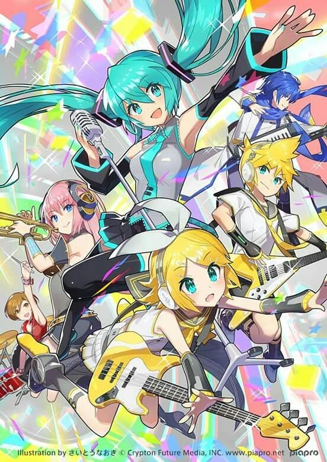

Vocaloid é uma tecnologia de síntese de voz desenvolvida pela Yamaha que permite a criação de músicas utilizando vozes sintetizadas. Lançada em 2004, essa tecnologia revolucionou o cenário musical, permitindo que pessoas criassem músicas sem a necessidade de um cantor humano.
O primeiro Vocaloid, Leon e Lola, foi desenvolvido pela Zero-G. Hatsune Miku, criada pela Crypton Future Media, foi lançada em 2007 e rapidamente se tornou a face mais popular do Vocaloid. A tecnologia utiliza gravações de vozes humanas para criar novas músicas digitalmente, sendo amplamente usada por músicos independentes e profissionais.
